Sobre Mim

Vejo nessa nova fase de avanço tecnológico, que ocorre no mundo, uma oportunidade para ingressar em algo que sempre foi minha paixão quiescente, a informática... Desde a adolescência meu hobby é a arte de tricotar. Eu e minha irmã gêmea já fizemos maravilhosas peças em tricô no decorrer de nossas vidas. Essa é uma arte que sempre nos deu muito prazer e antes de começar a trabalhar nos rendeu até algum retorno financeiro. Nova ainda, fiz um concurso público e entrei na Secretaria de Estado da Saúde de SP, 30 anos já se passaram, durante esse período me formei em Contabilidade (a única opção de curso universitário na cidade onde morava) e Pós-graduação em Saúde Pública, casei, mudei de cidade, divorciei e atualmente com os filhos na juventude, aos meus 50 anos, me deparei com essa oportunidade apresentada pelo grupo J.A., através do “Elas na Tech-Assíncrona”, que despertou algo adormecido desde meus 12 anos, quando eu e minha irmã fizemos nosso primeiro curso Basic I, num período de curso gratuito em 1984, mas nessa época era muito alto o investimento de estudo nessa área, principalmente para pais de gêmeas onde todos os gastos são em dobro. Meu objetivo atual é uma mudança de carreira profissional; realizando cursos voltados para essa formação na área da tecnologia, me parece uma ótima oportunidade para dar os primeiros passos para minha nova carreira Dev.


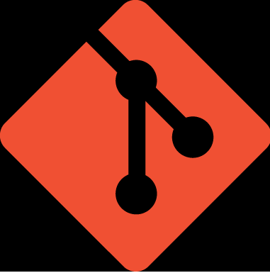
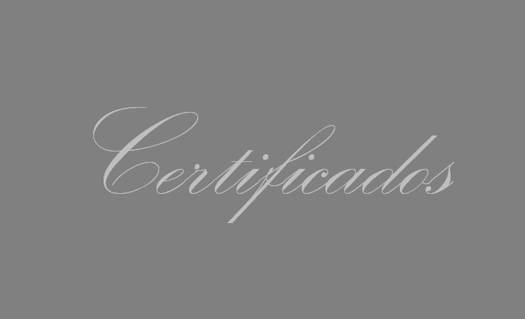
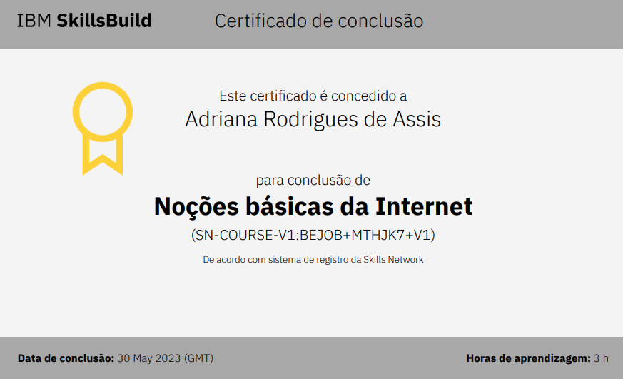
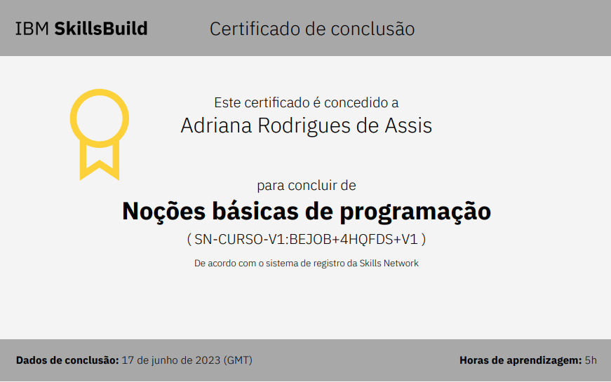
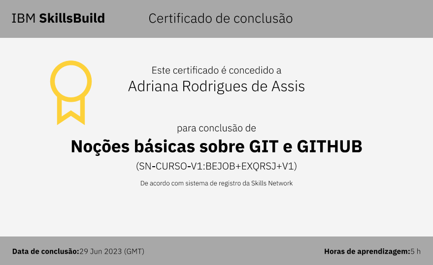
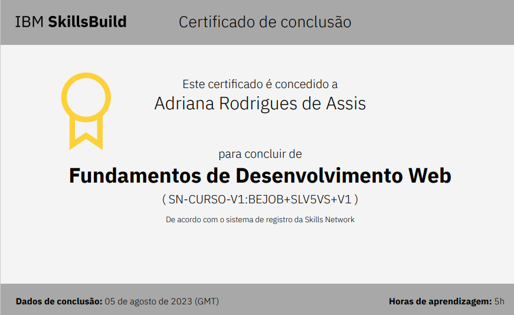
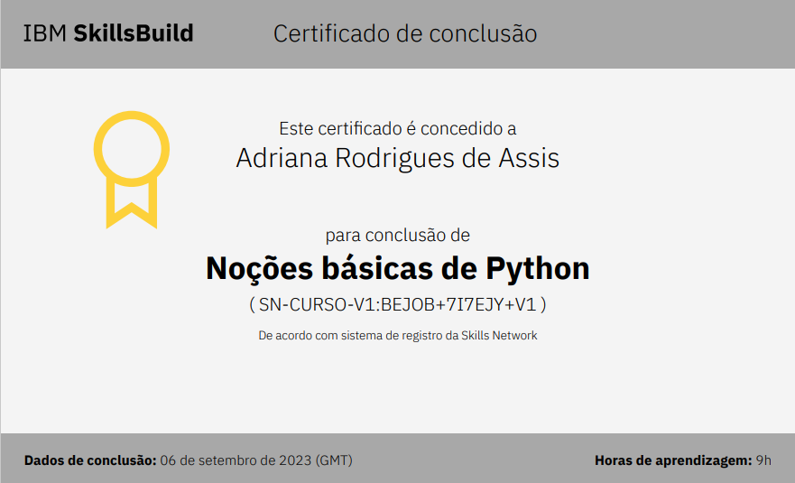
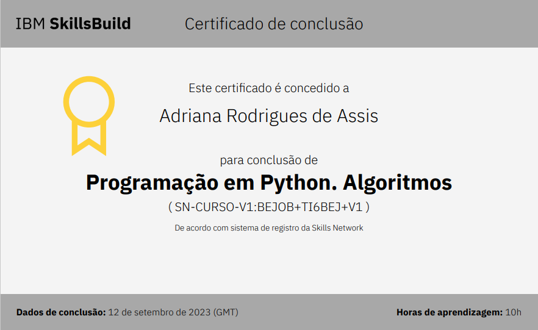
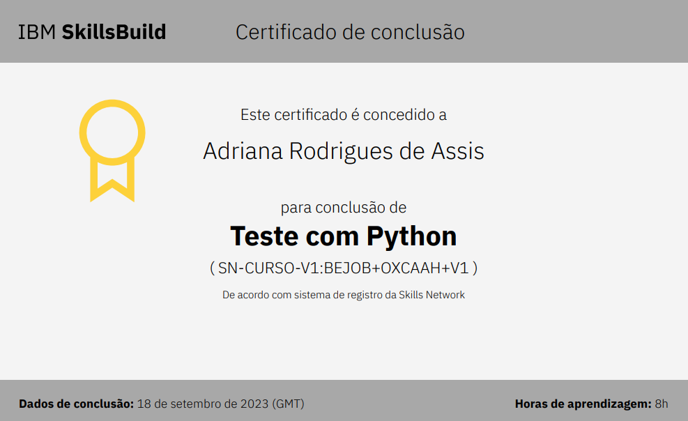
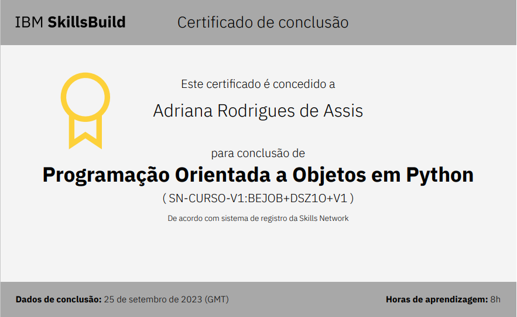
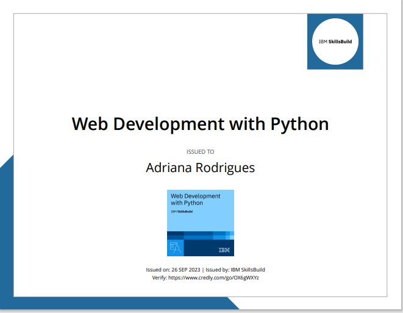
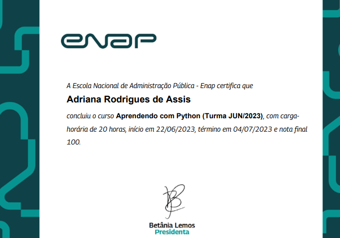
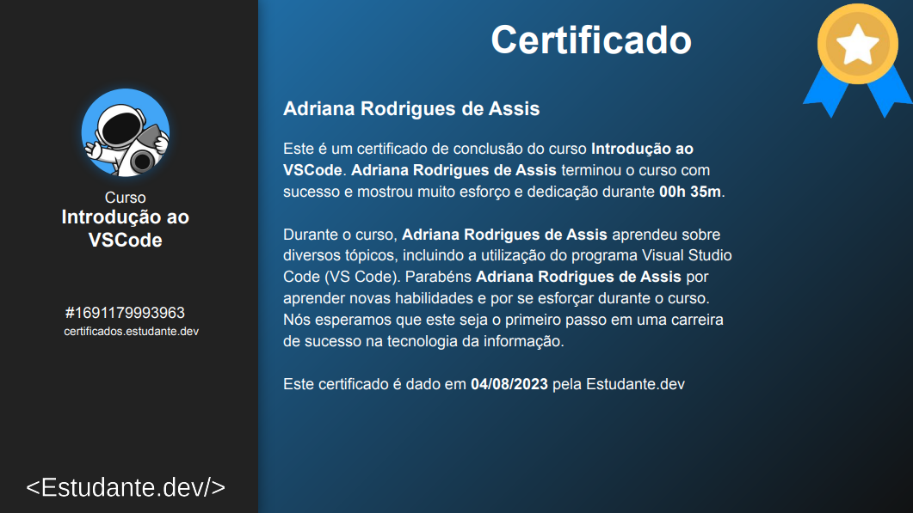
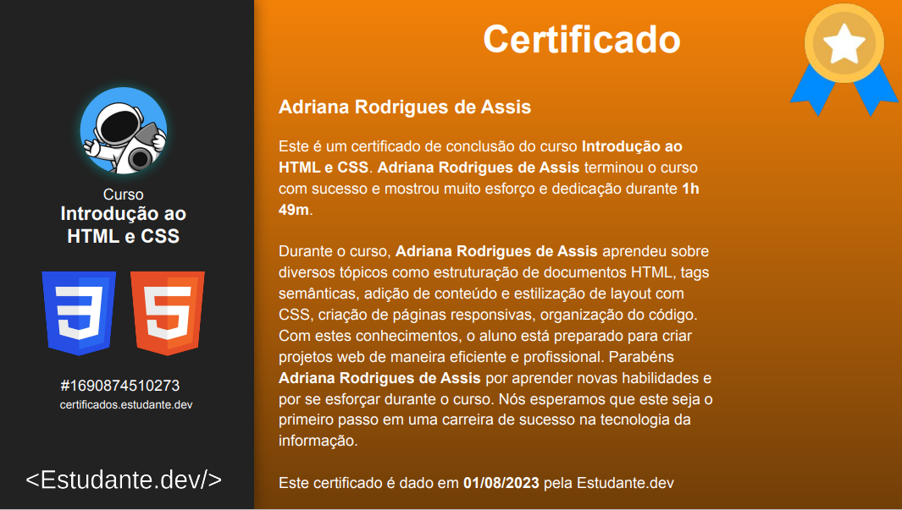
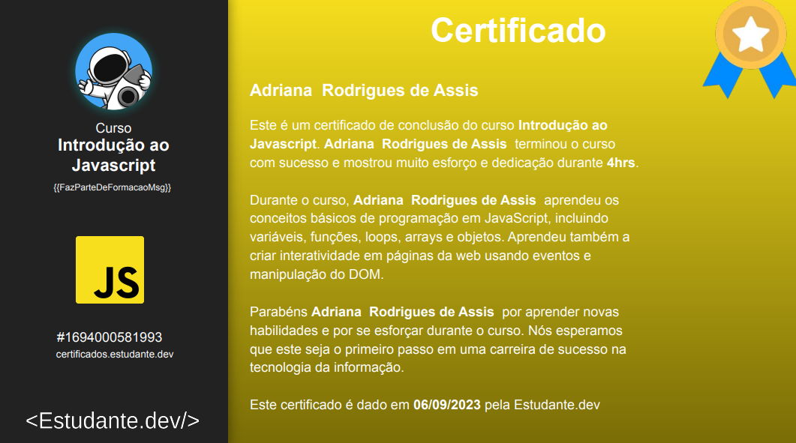
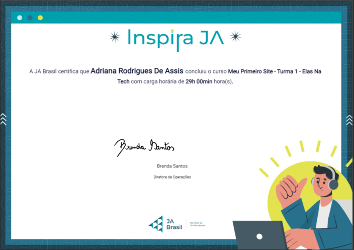
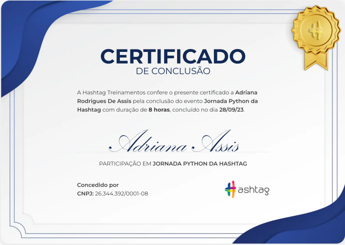
Contate-me
12-991692273
Taubaté-SP